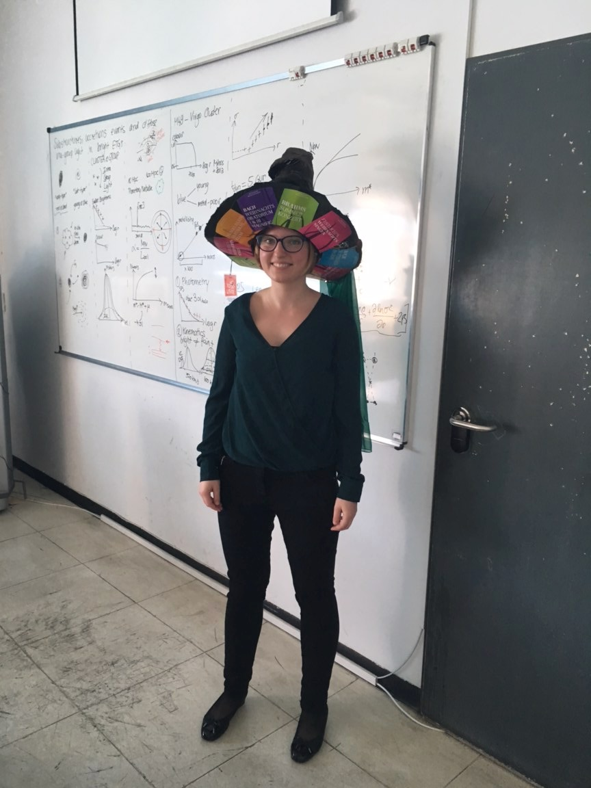

Born and raised in a small town in the north of Germany, I moved to Bremen to pursue a Bachelor of Science in Physics at Jacobs University (2010 - 2013). During my undergraduate, I had the chance to participate in the DAAD RISE worldwide internship programme. During my intership at the School of Astronomy and Astrophysics of the Australian National University my motivation to pursue a career in Astronomy was fostered.
For my Master of Science (2013 - 2015) I moved to the University of Groningen in the Netherlands, at whose Kapteyn Institute I had already completed parts of my Bachelor Research Project. There, I gained first observational experience during two observing runs with the Isaac Newton and William Herschel Telescopes at the Roque de los Muchachos, La Palma.
From 2015 to 2018 I was a PhD student at the European Southern Observatory as part of the International Max Planck Research School (IMPRS) on Astrophysics at the LMU Munich. I successfully defended my PhD thesis titled "Substructures, accretion events, and diffuse intra-group light surrounding bright early-type galaxies" in September 2018. In November 2018 I took up a postdoctoral fellowship at the European Southern Observatory in Santiago de Chile with observational duties at the Very Large Telescope at Paranal Observatory. Until late 2021, I was a support astronomer at UT4, as well as the instrument fellow for the MUSE integral-field spectrograph. You can read more about my time as an ESO fellow and my journey into astronomy in my Fellow profile in the ESO Messenger. Since October 2021, I am on secondment to the Sub-department of Astrophysics at the University of Oxford, where I am spending the final year of my ESO fellowship.
When I am not working on my research projects, one is likely to find me rehearsing music. While living in Munich, I was a soprano in the Münchner Motettenchor (MMC). Currently, I am singing in the Wadham College Chapel Choir and the Oxford Bach Choir (OBC). I also enjoy swimming, bouldering, windsurfing, and reading. Since moving to Chile and marvelling at the southern skies, I took up (astro)photography. Have a look at the gallery on this webpage
 orcid.org/0000-0002-8745-689X
orcid.org/0000-0002-8745-689X